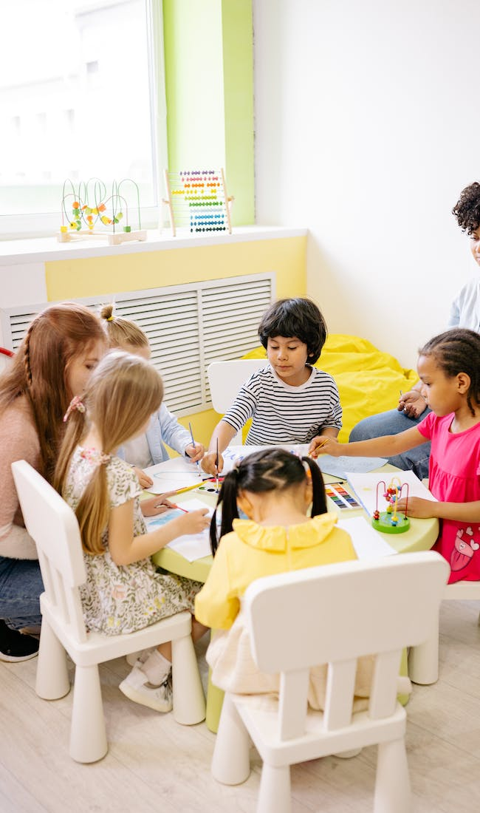
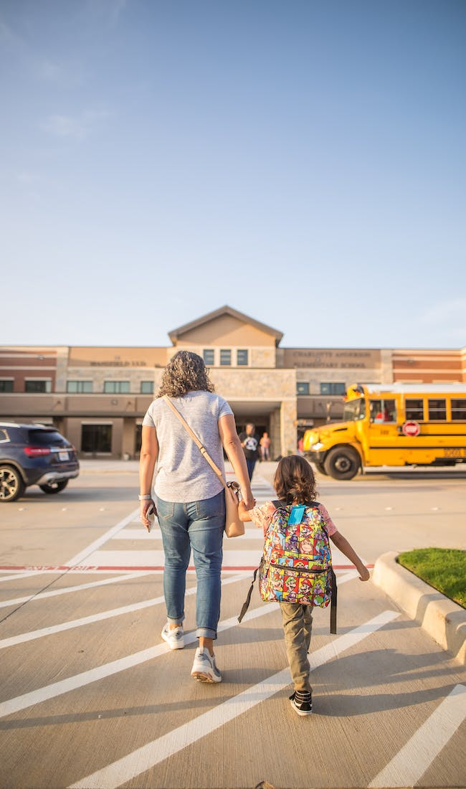
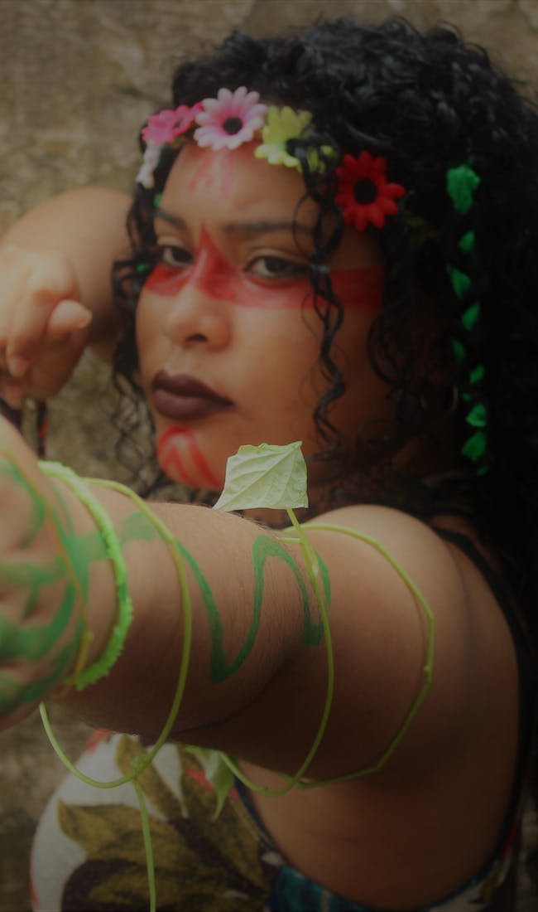

 Encontro entre professores e alunos
Preparem-se para uma tarde emocionante, repleta de atividades interativas, jogos educativos e sorrisos contagiantes!
Este evento é uma celebração da relação especial entre nossos queridos pequenos e os dedicados professores que os orientam em cada passo do caminho.
Durante esta jornada de aprendizado, as crianças terão a oportunidade de participar de experimentos científicos emocionantes, mergulhar em histórias encantadoras, soltar a imaginação em atividades artísticas e muito mais.
Nossos professores dedicados estão preparando uma série de atividades que não apenas educarão, mas também inspirarão a curiosidade e a criatividade de cada criança.
Não percam a chance de testemunhar o brilho nos olhos de seus pequenos enquanto eles exploram, aprendem e se divertem ao lado de seus professores amorosos. Estamos ansiosos para compartilhar esta tarde mágica com todos vocês!
Confirme sua presença para garantir que esta experiência única seja inesquecível para todas as crianças e suas famílias. Mal podemos esperar para ver todos vocês lá!

Feliz Dia das Mães!
Queridas mães,
Neste dia especial, queremos expressar nossa mais profunda gratidão por toda a dedicação, amor e carinho que vocês compartilham diariamente. Vocês são a essência da força, do amor incondicional e da beleza em nossas vidas.
Que este Dia das Mães seja repleto de momentos doces, sorrisos calorosos e a certeza de que são verdadeiramente apreciadas. Cada uma de vocês é única, especial e merecedora de todo o amor que o mundo pode oferecer.
Feliz Dia das Mães!
Com carinho,
[Colégio UniKids]

Dia do folclore
Queridos alunos, pais, e toda a comunidade escolar,
É com muita alegria e entusiasmo que convidamos vocês para participar do nosso tão aguardado "Dia do Folclore" na escola! Um dia dedicado a celebrar e explorar as riquezas das tradições e histórias que compõem o nosso folclore.
Data: 22/08/23
Horário:14:00
Local: Colégio UniKids
O que Esperar:
Desfile de Personagens: Nossos alunos irão desfilar e compartilhar um pouco da diversidade das lendas e personagens que fazem parte da nossa cultura,
Atividades Interativas
Apresentações Artísticas: Os talentos de nossos alunos brilharão em apresentações artísticas que celebram as raízes culturais de nosso país,
Convidamos a todos para vestirem-se com trajes folclóricos ou cores vibrantes, trazendo consigo a energia positiva para esse dia tão especial.
Esperamos que todos se juntem a nós para celebrar, aprender e se encantar com as maravilhas do nosso folclore. Será uma jornada mágica e educativa para toda a família!
Contamos com a sua presença para tornar este evento ainda mais especial. Até lá!
Com carinho,
(A Direção/Equipe Organizadora Unikids)